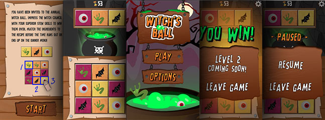
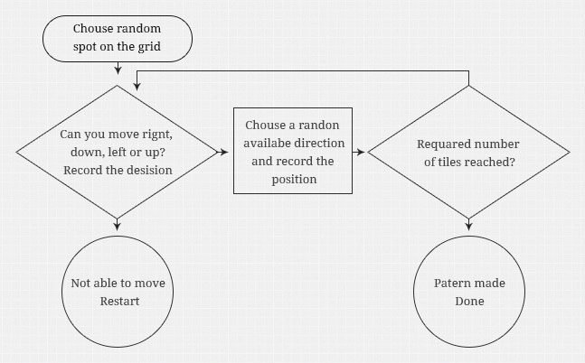

Klink It
Klink It is a shape and pattern recognition puzzle game. It, first started out as a competition entry in GCA 2014 (Great Canadian Appathon) but was then redesigned visually and reprogrammed in a different engine. This is a group project so the team consisted of two designers and two developers: Will Du and Fatemah Manji as designers and Tanya Grimes and my self as a developers. My personal work consisted in developing the core game, but I also helped out in other areas.
History
The game was initially titled Witch’s Ball, the basic story was that you are a witch whose task was to prepare a stew for the guests and if you are not quick enough you will be cooked instead. The game mechanic was to find the ingredients on a 3 by 3 grid in a special order before the time runs out.
The inspiration came from the mobile game, Quento that was all about adding and subtracting numbers on the grid in order to solve a puzzle. We loved the idea of the grid and how the game mechanic was mobile friendly, so we took the core concept and started to build on top of it.
This version of the game was developed in Appcelerator because it was easy to develop in the environment using only XML templates and Javascript. We also did not have the license for iOS so the software allowed us to publish on to Android instead.
Present
The Game has changed its style to a more abstract look that was heavily influenced by another mobile game, Dots. We have extended our pattern length to six shapes, so now the user is able to select their own difficulty, as well as, added a local high score and an interactive tutorial.
Now the game is developed in XCode using a Cocos 2D game engine. Sadly thats the only thing we could use at the time so it became only available for iOS products.
Pattern
The core game mechanic is to find a string of shapes in the grid as fast as possible, so one of the first tasks was to make an algorithm that pattern. Before the final version I had ideas and prototypes that did the job but they weren't expendable and could do only three shapes, so most of it had to be redesigned.
What I ended up was an algorithm that needed to understand that there is a 2D grid array. As a very first step it chooses a random spot on the grid and does a check in which direction can it go. The check consists of were on the grid the current tile is located, so that it doesn’t go over the edge and a check for the tile that has already been selected, this way it doesn't go back and does not overlap other tiles. From all the available direction it can go a random one is chosen and the next tile becomes that tile and the cycle start again with the check until the required number of tiles is reached. If it so happens that that there is no free position to go, it will start over from the beginning by choosing a new random spot on the grid.
This algorithm is designed primarily for a 3 by 3 grid and it performs quite well and will do the max 9 results and an average of 4. Its very fast and unnoticeable. It obviously takes longer the bigger the grid, so it should not be used for 5 by 5 or over, because it will breake.
Conclusion
In conclusion it was a fun project to do with friends that taught me a lot about group work and building something from the ground up. The app is not on the app store just yet, but it’ll be there soon. Its also fun to see people come to me and tell me that the level is impossible, when in fact it’s solvable.